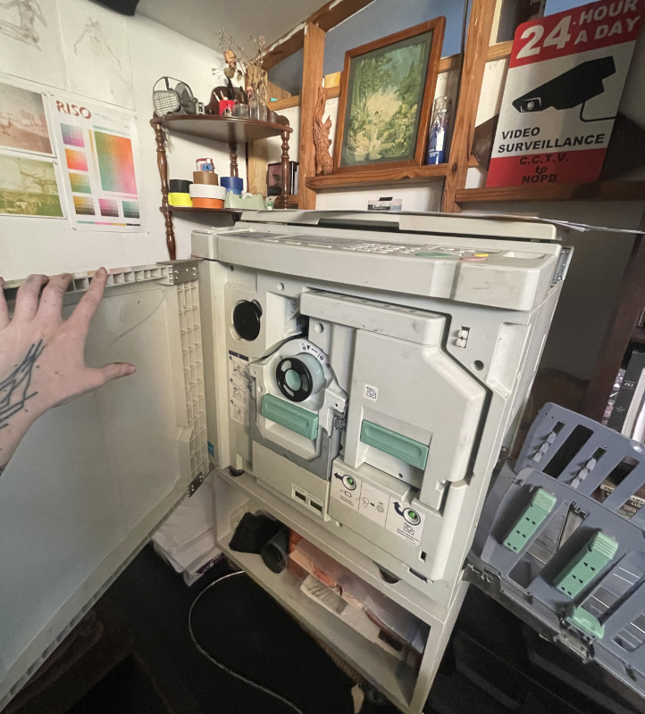

illustration - risograph printing
My friend gave me a broken EZ-390U riso printer. (lucky me!!) I fixed it, and now I use it to make riso prints and zines.
Risograph printing is a unique printmaking process. I describe it as "like screenprinting but fast"- a rice paper screen (aka master) is burned for each print job, and rice bran based-ink is pushed through this screen onto paper. To add an additional color to the print, color drums are changed, a new master is burned, and paper is re-run through the machine.
This process, while involved, is more energy-efficient than traditional laser printing, and the nature of the ink allows for a wider range of colors to be printed (like fluorescent or metallic colors!)
I have four colors in my riso setup currently:
Fluorescent Pink
Sunflower
Seafoam
Black
This color selection allows me to print in a "CMYK-adjacent" color scheme. Applied together, I can get a pretty good range of tones, and they all look good on their own if I want to print in monochrome.
I'd love to get more colors someday, but every color requires its own drum, and sourcing drums for my older machine is difficult and expensive.
Still, if anyone has any leads to acquiring more drums for an EZ machine, hit my line! Doesn't matter the condition as I can restore them :)

my riso printer, door open, loaded with the Seafoam drum.